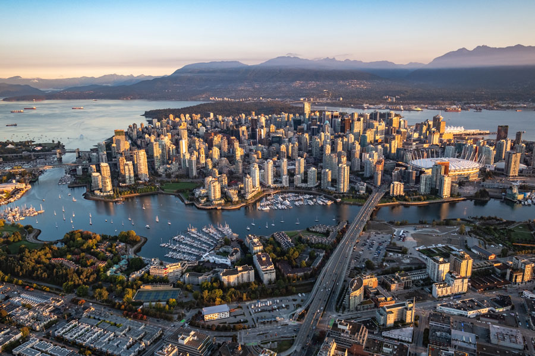
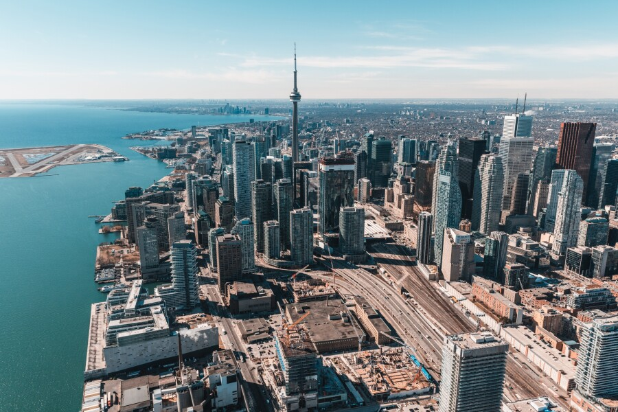
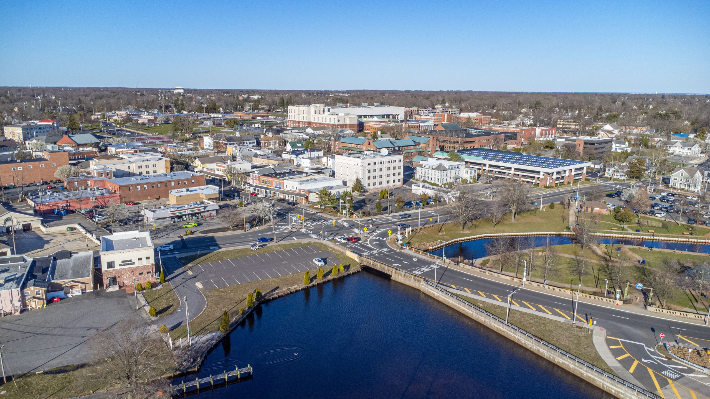
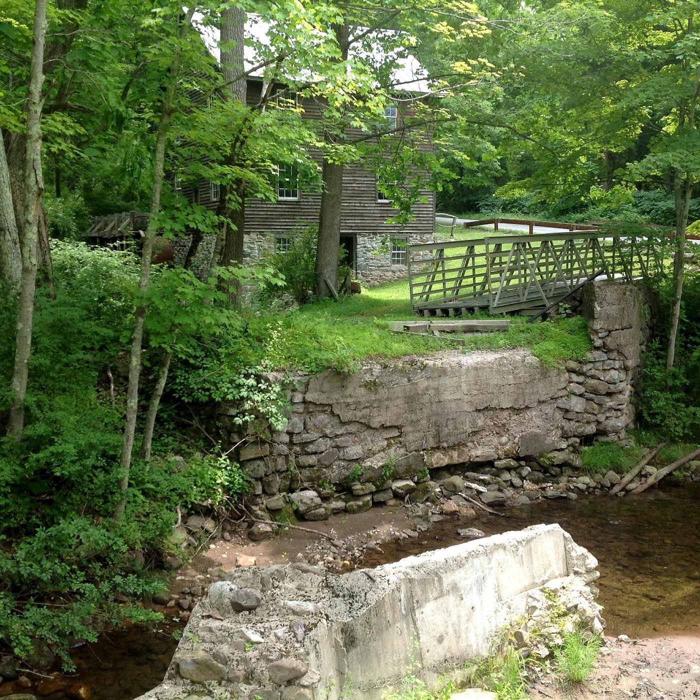

Where Movies are Set vs Where Movies are Shot
Many of the films that are inspired by or take place in the Northeast are not necessarily shot there. Let's take a look at if the setting and where they were actually shot line up for these films!
Filming Location Movie Setting Both Set + Film Location

Jason Takes Manhattan takes place in Manhattan

It was shot in Vancouver, British Columbia

American Psycho takes place in Manhattan

It was shot in Toronto, Ontario

Amityville Horror takes place on Long Island, NY

It was shot in Toms River, NJ

Halloween takes place in Haddonfield, IL (fictional) but was inspired by Haddonfield, NJ
It was shot in South Pasadena, CA

Friday the 13th takes place at Camp Crystal Lake (fictional)

It was shot in Blairstown, NJ

Bride of Chucky takes place across New York and New Jersey
It was shot in Toronto, Ontario